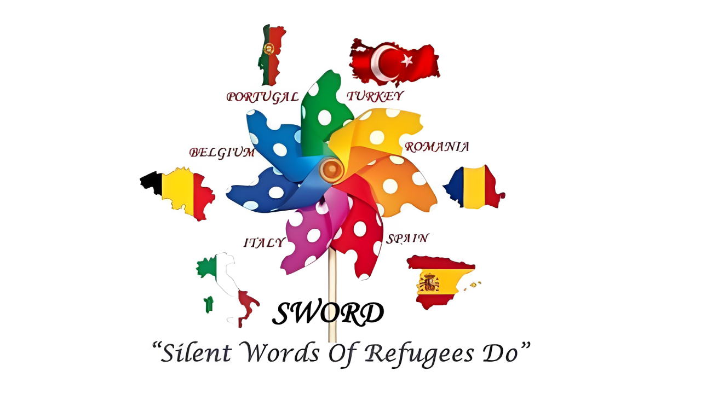
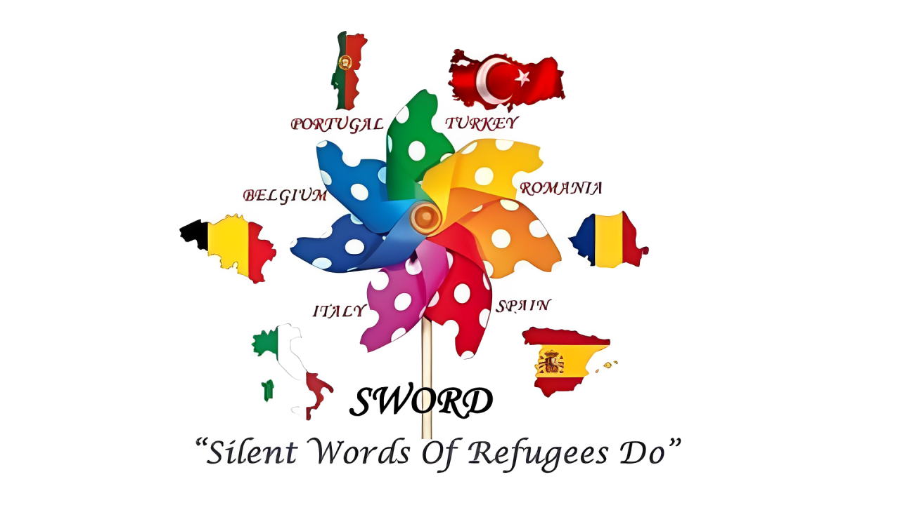
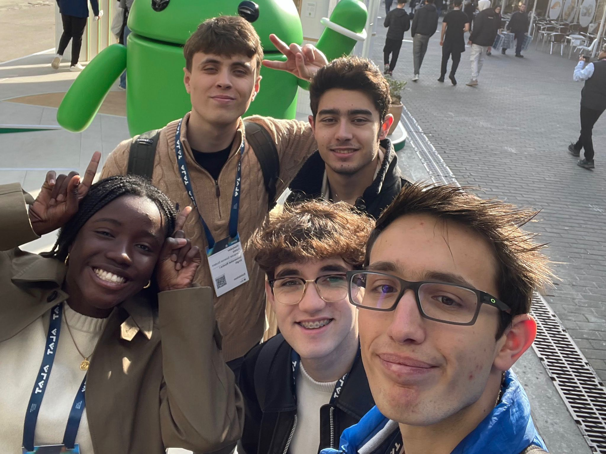
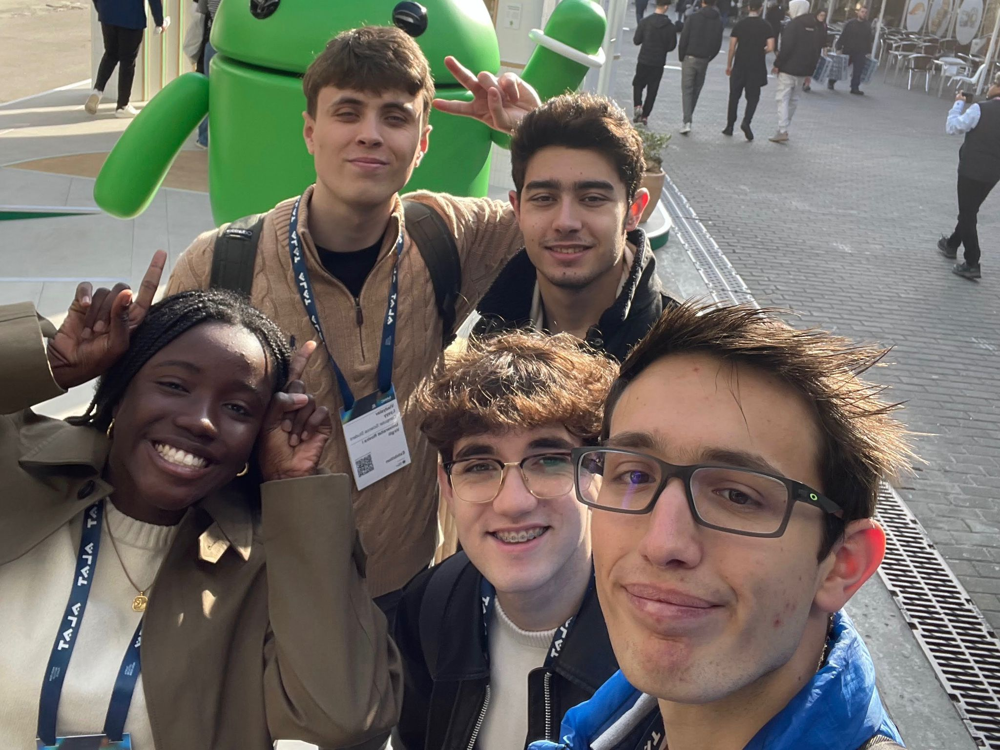
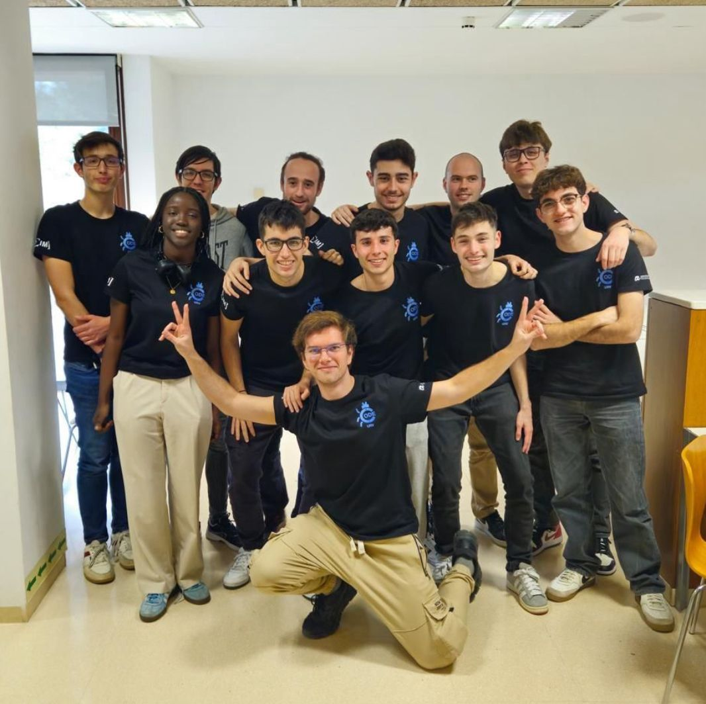
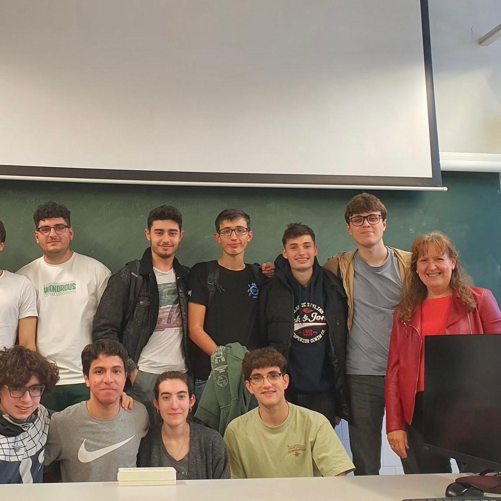
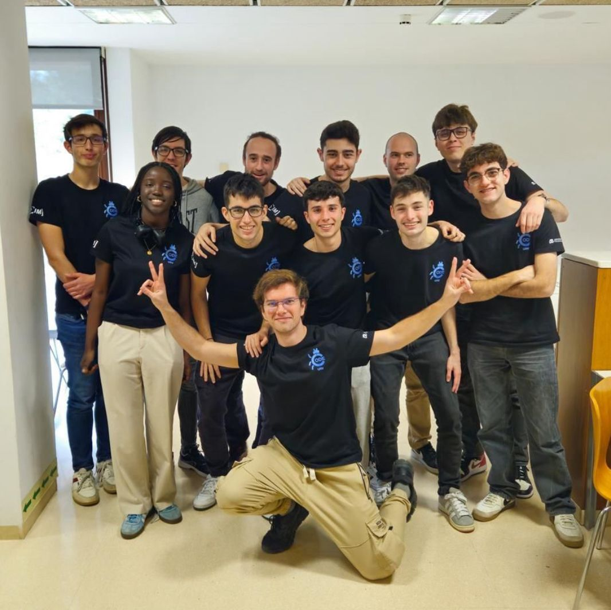
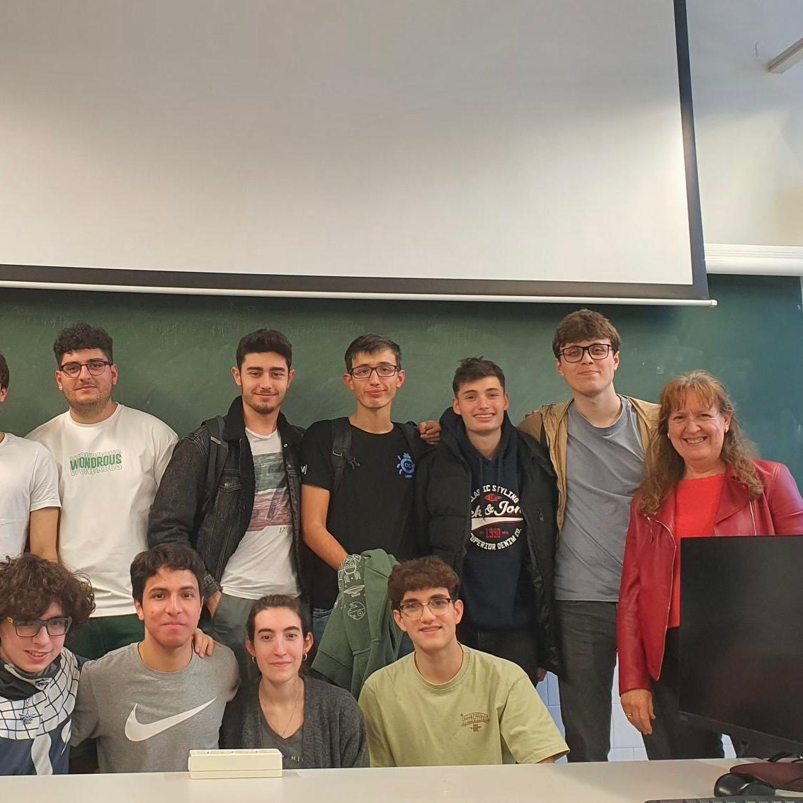

Biografía
¡Hola! Me llamo Roger García Doncel. 👋
Soy estudiante de segundo año de Ingeniería Informática en la Universidad Rovira i Virgili.
Desde pequeño, el mundo de la tecnología siempre me ha atraído mucho. Intento estar siempre al día con las nuevas tecnologías, aprendiendo cosas nuevas, siguiendo los avances de la IA y siguiendo de cerca el mundo de la ciberseguridad.
Además de esta pasión por los ordenadores, tengo muchos otros hobbies. Por un lado, me encanta hacer kilómetros ya sea de mochilero por los Pirineos o con mi bicicleta. ⛰️
Pero la realidad es que los deportes que más me apasionan son los que puedo practicar en la playa. Desde el voleibol, el snorkel, el paddle surf, hasta la vela. ⛵
Dejando de lado los deportes, mi otro gran hobbie es la guitarra. Puedo pasarme horas en mi cuarto improvisando o aprendiendo obras nuevas. 🎶
Esta página web es, en realidad, un portafolio que iré actualizando con información relevante para que la gente se haga una idea de quién soy.
Si necesitas contactar conmigo, debajo tienes mis datos.
¡Salud y Linux! 😉
"Primero resuelve el problema. Entonces, escribe el código" -- John Johnson


 

 


 


